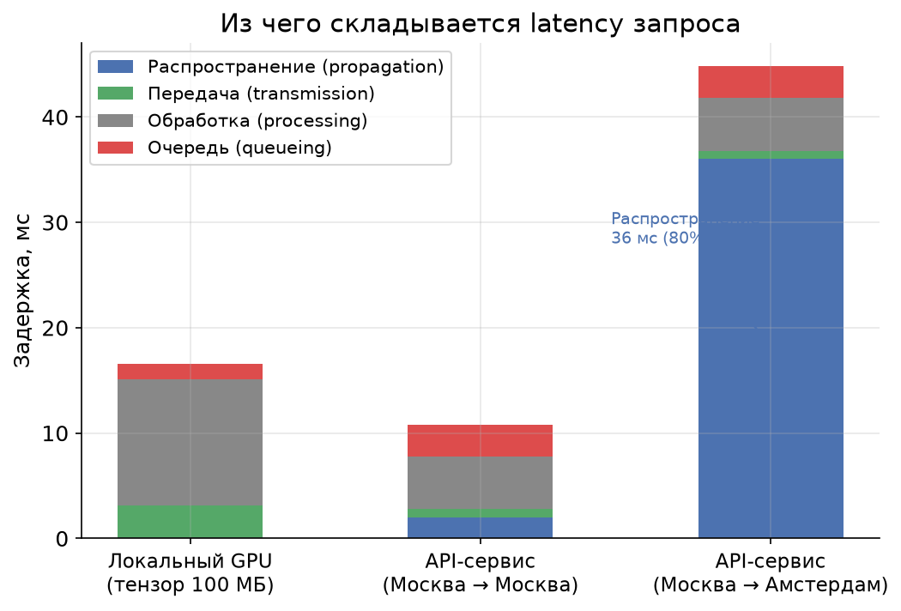
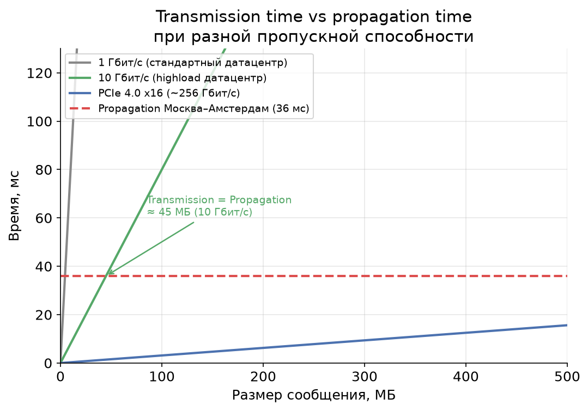
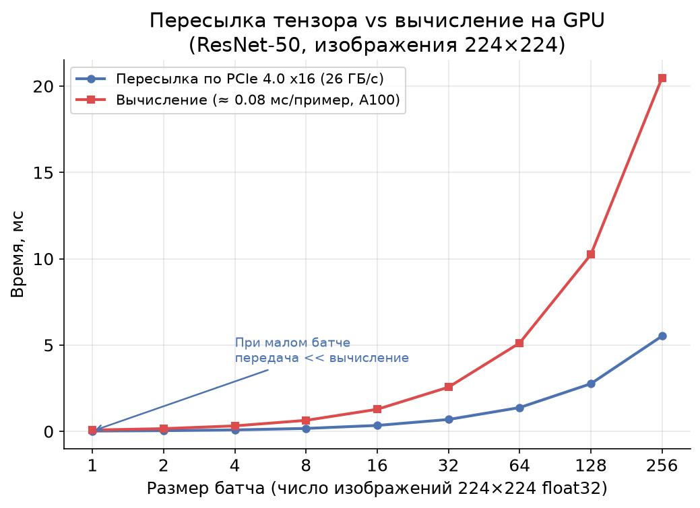

Урок 1. Из чего состоит Latency?
TL;DR: Полное время отклика системы складывается из четырёх компонент: время распространения сигнала, время передачи данных, время обработки и время ожидания в очереди. Первая из них — физическая константа, которую нельзя победить никаким апгрейдом железа. Остальные три — поле для инженерной работы. Понять эту разницу — значит перестать чинить то, что починить нельзя, и начать чинить то, что можно.
Откуда вообще берётся задержка
Представьте: вы заказали доставку пиццы из ресторана в пяти кварталах от вас. Курьер должен:
- Взять пиццу с кухни и упаковать её — обработка (processing);
- Подождать, пока освободится свободный курьер — ожидание в очереди (queueing);
- Физически проехать эти пять кварталов — распространение (propagation);
- Выгрузить коробку и занести в лифт — передача (transmission).
В компьютерных системах всё то же самое. Когда браузер делает запрос к серверу, когда ML-сервис отправляет тензор на GPU, когда Kafka-консьюмер читает сообщение из топика — за каждым из этих событий скрыты ровно эти четыре компоненты задержки.
Давайте разберём их по очереди.
Четыре компоненты задержки
Время распространения (propagation time)
Это время, которое требуется сигналу, чтобы физически добраться из точки A в точку B. Для электрических сигналов в медном кабеле — скорость близка к скорости света в вакууме. В оптоволокне свет движется медленнее из-за показателя преломления стекла: примерно $2 \times 10^5$ км/с, то есть около двух третей от скорости света в вакууме.
Посчитаем конкретный пример. Расстояние по прямой от Москвы до Амстердама — около 2500 км. Маршрут кабеля по факту длиннее, возьмём коэффициент 1.4 — получается ~3500 км реального пути.
$$t_{\text{prop}} = \frac{d}{v} = \frac{3500 \text{ км}}{200\,000 \text{ км/с}} \approx 0{,}0175 \text{ с} = 17{,}5 \text{ мс}$$
Это односторонняя задержка. Round-Trip Time (RTT) — туда и обратно — будет порядка 35–40 мс. Попробуйте сами: ping ams-ix.net из московской сети почти всегда покажет 35–45 мс.
Ключевое свойство: propagation time зависит только от расстояния и физической среды. Купите сервер в десять раз мощнее — эти миллисекунды никуда не денутся. Добавьте десять реплик — то же самое. Единственный способ её уменьшить — физически приблизить узлы друг к другу (geo-распределение, CDN, edge-серверы).
Время передачи (transmission time)
Это время, которое требуется, чтобы «протолкнуть» все биты сообщения через канал. Зависит от размера сообщения и пропускной способности:
$$t_{\text{trans}} = \frac{L}{B}$$
где $L$ — размер сообщения (биты), $B$ — пропускная способность канала (бит/с).
Пример. Передать 100 МБ по каналу 1 Гбит/с:
$$t_{\text{trans}} = \frac{100 \times 8 \text{ Мбит}}{1000 \text{ Мбит/с}} = 0{,}8 \text{ с} = 800 \text{ мс}$$
Тот же файл через канал 10 Гбит/с — 80 мс. Через PCIe 4.0 x16 (~256 Гбит/с в шине, эффективно ~32 ГБ/с полезной пропускной способности) — доли миллисекунды.
Ключевое свойство: transmission time можно уменьшить тремя способами: - увеличить пропускную способность канала (более мощный GPU, более широкий сетевой интерфейс); - сжать данные (уменьшить $L$); - разбить большой запрос на мелкие части — тогда первые биты начнут обрабатываться раньше, чем переданы все остальные (этот приём используется в стриминге и чанкированных запросах).
Время обработки (processing time)
Время, которое занимает полезная работа: выполнить SQL-запрос, прогнать тензор через нейросеть, применить бизнес-логику. Зависит от мощности процессора/GPU и сложности алгоритма.
Это поле для оптимизации алгоритмов, профилирования, кеширования, выбора правильных структур данных.
Время ожидания в очереди (queueing time)
Запрос пришёл, но сервер в данный момент занят другим запросом. Придётся подождать. Это и есть queueing time.
Интуитивно кажется, что если сервер загружен на 50%, то очередь небольшая. Но это не так: даже при 50%-ной загрузке случайные всплески (bursts) создают очередь, которая иногда бывает удивительно длинной. Queueing time — самый нелинейный и коварный компонент задержки. Именно ему посвящена большая часть этого курса.
Итоговая формула и наглядная картинка
Полное время отклика (response time, или latency) системы:
$$W = t_{\text{prop}} + t_{\text{trans}} + t_{\text{proc}} + t_{\text{queue}}$$
На графике ниже видно, как соотносятся эти компоненты в трёх типичных сценариях.

Обратите внимание на третий столбец — запрос между датацентрами в разных городах. Propagation (синий сегмент) занимает ~80% всего времени отклика. Никакой апгрейд GPU или увеличение числа воркеров не уберёт эти миллисекунды.
Где что доминирует: размер сообщения как водораздел
Transmission time и propagation time «соревнуются» в зависимости от двух факторов: размера сообщения и пропускной способности канала.

Что показывает этот график:
- При маленьких сообщениях (левая часть) transmission time мала для любого канала. Propagation — константа — здесь доминирует. Это мир API-запросов, пингов, коротких JSON.
- При больших сообщениях (правая часть) transmission time начинает превышать propagation. Купить более широкий канал становится осмысленным.
- Горизонтальная пунктирная линия — это propagation Москва–Амстердам (~36 мс). Для канала 10 Гбит/с «точка безразличия» — около 45 МБ. Меньше 45 МБ — propagation важнее; больше — transmission важнее.
Практический вывод: для большинства HTTP-запросов (payload < 1 МБ, датацентры в одном регионе) transmission time ничтожна. Оптимизировать её бессмысленно: нужно либо уменьшать latency приближением к пользователю (propagation), либо уменьшать queueing (очереди).
Разбираем ML-инференс: запрос по сети, тензор, PCIe и GPU
Рассмотрим нашего первого «героя» курса — сервис ML-инференса. Это отдельный сетевой сервис: у него нет «своих» пользователей, к нему по HTTP/gRPC обращаются другие сервисы — бэкенд, который хочет классифицировать загруженную пользователем картинку, пайплайн модерации, рекомендательная система. Поступает запрос на классификацию изображения с помощью ResNet-50. Проследим его путь целиком:
- Сеть. Запрос с изображением летит от сервиса-клиента до инференс-сервиса: propagation (внутри датацентра — доли миллисекунды) + transmission (зависит от размера картинки и полосы).
- Очередь. Если все обработчики заняты, запрос ждёт — это queueing, главный герой следующих уроков.
- Шина. Данные (тензор — матрица чисел float32) из оперативной памяти передаются на видеокарту по шине PCIe.
- GPU выполняет прямой проход (forward pass) нейросети.
- Ответ — метка класса и вероятности, считанные байты — возвращается по сети сервису-клиенту.
Считаем реальный пример
Начнём с сетевого плеча. Сервис-клиент и инференс-сервис стоят в одном датацентре: внутренняя сеть 10 Гбит/с (= 1250 МБ/с), RTT между машинами ~0,2 мс. Изображение перед отправкой — это те же ~0,6 МБ (см. расчёт тензора ниже), значит transmission:
$$t_{\text{net}} = \frac{0{,}574 \text{ МБ}}{1250 \text{ МБ/с}} \times 1000 \approx 0{,}46 \text{ мс}$$
Итого сеть обходится примерно в $0{,}2 + 0{,}46 \approx 0{,}7$ мс. Теперь — что происходит внутри сервиса.
Одно изображение RGB 224×224 в формате float32:
$$L = 3 \times 224 \times 224 \times 4 \text{ байт} = 602\,112 \text{ байт} \approx 0{,}574 \text{ МБ}$$
Пропускная способность PCIe 4.0 x16 — около 32 ГБ/с (эффективная полезная пропускная способность):
$$t_{\text{trans}} = \frac{0{,}574 \text{ МБ}}{32\,000 \text{ МБ/с}} \times 1000 \approx 0{,}018 \text{ мс}$$
Время вычисления ResNet-50 на современной GPU (порядок): ~5–15 мс на одно изображение.
То есть пересылка тензора по PCIe занимает меньше 1% от времени вычисления. Шина PCIe в этом сценарии вообще не является узким местом.
Соберём полный путь запроса (пока без очереди — ей посвящены следующие уроки):
| Компонента | Время |
|---|---|
| Сеть от сервиса-клиента (propagation + transmission) | ~0,7 мс |
| Пересылка тензора по PCIe | ~0,02 мс |
| Вычисление на GPU | ~10 мс |
| Ответ по сети (сотни байт) | ~0,2 мс |
| Итого | ~11 мс |
Внутри одного датацентра доминирует вычисление: сеть добавляет меньше десятой части, PCIe — сотые доли. Но стоит сервису-клиенту оказаться в другом городе — и propagation (десятки миллисекунд RTT) обгонит само вычисление, как в третьем столбце графика в начале урока.
А что если батч большой?
Посмотрим на зависимость от размера батча:

Синяя линия (пересылка по PCIe) растёт линейно с размером батча. Красная (вычисление) тоже, но GPU эффективно параллелизует вычисления, поэтому в абсолютных числах время вычисления всегда доминирует над временем передачи. Даже для батча из 256 изображений (~147 МБ) пересылка занимает менее 5 мс, а вычисление — на порядок больше.
Вывод из ML-примера: если ваш инференс-сервис отвечает медленно, первым делом смотрите на время вычисления и queueing (ждут ли запросы в очереди), затем — на сетевое плечо до сервисов-клиентов (не уехали ли они в другой регион). Пропускная способность PCIe-шины — последнее, что стоит подозревать.
Propagation — физический предел, с которым нужно смириться
Вернёмся к сети. Проведём мысленный эксперимент: у нас есть сервис в Москве, а пользователь в Амстердаме. Мы хотим уменьшить RTT.
| Что мы делаем | Эффект на latency |
|---|---|
| Ставим GPU в 10 раз мощнее | processing↓, но propagation не изменится |
| Масштабируем на 100 серверов | queueing↓, но propagation не изменится |
| Сжимаем запрос в 10 раз | transmission↓ (незначительно при малом payload) |
| Открываем POP в Амстердаме | propagation↓ — расстояние сократилось! |
Скорость света в оптоволокне ~200 000 км/с — это фундаментальный физический предел. Пока физики не придумают что-то новее, с этим нужно работать архитектурно: CDN, geo-балансировка, репликация данных ближе к пользователям.
Именно поэтому крупные облачные провайдеры (AWS, Google Cloud, Yandex Cloud) строят датацентры на каждом континенте и даже в каждой крупной стране — не для надёжности (хотя и для неё тоже), а чтобы уменьшить физическое расстояние до конечного пользователя.
Мостик к следующему уроку
Мы разобрались, из чего складывается latency. Из четырёх компонент две — propagation и transmission — хорошо поддаются расчёту. Но оставшиеся две — processing и queueing — зависят от того, сколько запросов одновременно обрабатывает система и как долго каждый из них занимает ресурс.
В следующем уроке мы познакомимся с теоремой Литтла — математическим законом, который связывает число запросов в системе, интенсивность их прихода и среднее время отклика. Этот закон станет нашим главным инструментом на протяжении всего курса.
Главное из урока
- Полное время отклика: $W = t_{\text{prop}} + t_{\text{trans}} + t_{\text{proc}} + t_{\text{queue}}$.
- Propagation time — физическая константа, зависит только от расстояния и среды. Скорость света в оптоволокне ~200 000 км/с. Ускорить сервер не поможет — нужно приближать сервер к пользователю.
- Transmission time — $L / B$, зависит от размера сообщения и пропускной способности. Уменьшается мощностью канала, сжатием, разбивкой на части.
- Для коротких сообщений (< единиц МБ) в сети propaganda доминирует над transmission. Оптимизировать transmission в этом случае бессмысленно.
- В ML-инференсе на локальном GPU пересылка тензора по PCIe 4.0 занимает единицы микросекунд — на порядки меньше времени вычисления. Узкое место — GPU-вычисление и очередь запросов.
- Processing и queueing — поле для инженерной оптимизации. Queueing — самый нелинейный и непредсказуемый компонент, ему посвящены следующие уроки.
Проверь себя
Задачи
Задача 1
ML-инференс-сервис принимает по сети запросы от других сервисов на обработку тензоров. Каждый тензор — батч из 32 изображений размером 224×224 пикселя в формате float32 (RGB). Тензор передаётся с RAM на GPU по шине PCIe 4.0 x16 с пиковой пропускной способностью 32 ГБ/с. GPU выполняет инференс модели EfficientNet-B0 за 8 мс на батч. Сетевой запрос от клиента до датацентра добавляет 2 мс propagation (в одну сторону) и 0.5 мс на передачу payload запроса.
Определите: 1. Размер тензора в МБ. 2. Время пересылки тензора по PCIe (transmission time GPU). 3. Полную латентность одного запроса (без queueing), если ответ возвращается по той же сети. 4. Какая компонента является узким местом?
Решение
1. Размер тензора:
$$L = 32 \text{ изобр.} \times 3 \text{ канала} \times 224 \times 224 \text{ пикселей} \times 4 \text{ байт/пиксель}$$
$$L = 32 \times 3 \times 224 \times 224 \times 4 = 32 \times 602\,112 = 19\,267\,584 \text{ байт} \approx 18{,}38 \text{ МБ}$$
2. Время пересылки по PCIe:
$$t_{\text{trans, PCIe}} = \frac{18{,}38 \text{ МБ}}{32\,000 \text{ МБ/с}} \times 1000 \approx 0{,}57 \text{ мс}$$
3. Полная латентность:
Цепочка: сеть (propagation туда) → сеть (transmission запроса) → GPU transfer → GPU compute → сеть (propagation обратно) → сеть (transmission ответа).
Для простоты считаем ответ маленьким (вектор вероятностей ≪ 1 КБ, transmission ≈ 0):
$$W = t_{\text{prop, туда}} + t_{\text{trans, запрос}} + t_{\text{trans, PCIe}} + t_{\text{proc, GPU}} + t_{\text{prop, обратно}}$$
$$W = 2 + 0{,}5 + 0{,}57 + 8 + 2 = 13{,}07 \text{ мс}$$
4. Узкое место:
| Компонента | Время, мс | Доля |
|---|---|---|
| Propagation (туда + обратно) | 4.0 | 30.6% |
| Transmission (сеть) | 0.5 | 3.8% |
| Transmission (PCIe) | 0.57 | 4.4% |
| Processing (GPU) | 8.0 | 61.2% |
Узкое место — GPU-вычисление (61% от общей латентности). Именно его нужно оптимизировать: квантизация модели, pruning, более быстрый GPU, эффективная архитектура (EfficientNet-B1 с меньшей моделью, TensorRT и т.п.).
Задача 2
Команда рассматривает два варианта развёртывания сервиса для европейских пользователей (условно, центр — Берлин):
- Вариант 1: Один датацентр в Москве. RTT Берлин–Москва ≈ 40 мс.
- Вариант 2: Добавить POP (Point of Presence) в Берлине. RTT Берлин–Берлин ≈ 2 мс.
Сервис обрабатывает каждый запрос за 5 мс. Размер запроса и ответа — по 10 КБ, сеть 100 Мбит/с.
- Посчитайте transmission time для запроса и ответа.
- Посчитайте общую latency для обоих вариантов (без queueing).
- На сколько процентов уменьшится latency при открытии берлинского POP?
- Оправдан ли переезд, если queueing в московском ДЦ составляет 30 мс?
Решение
1. Transmission time (запрос + ответ):
$$t_{\text{trans}} = \frac{10 \text{ КБ} \times 8}{100\,000 \text{ Мбит/с}} \times 1000 = \frac{0{,}08 \text{ Мбит}}{100 \text{ Мбит/с}} \times 1000 = 0{,}8 \text{ мс}$$
Запрос + ответ = $0{,}8 \times 2 = 1{,}6$ мс. (Это небольшая добавка — сравним с propagation.)
2. Полная latency:
Вариант 1 (Москва): $$W_1 = 40 + 1{,}6 + 5 = 46{,}6 \text{ мс}$$
Вариант 2 (Берлин): $$W_2 = 2 + 1{,}6 + 5 = 8{,}6 \text{ мс}$$
3. Снижение latency:
$$\Delta = \frac{46{,}6 - 8{,}6}{46{,}6} \times 100\% \approx 81{,}5\%$$
Открытие локального POP даёт почти пятикратное ускорение за счёт уменьшения propagation.
4. С учётом queueing:
Если в московском ДЦ queueing = 30 мс:
$$W_1' = 40 + 1{,}6 + 5 + 30 = 76{,}6 \text{ мс}$$
Если берлинский POP при меньшей нагрузке имеет queueing ≈ 0:
$$W_2' = 2 + 1{,}6 + 5 + 0 = 8{,}6 \text{ мс}$$
Итоговое ускорение — почти в 9 раз. Переезд определённо оправдан: он одновременно уменьшает и propagation, и — за счёт распределения нагрузки — queueing. Именно так работает геораспределённое развёртывание крупных сервисов.